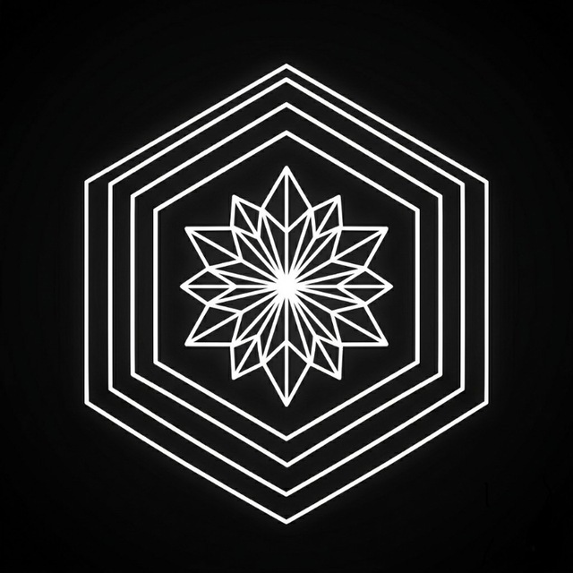

Я начинающий, но невероятно целеустремленный Fullstack разработчик. Несмотря на то, что я нахожусь в начале коммерческого пути, я активно развиваюсь, создаю реальные проекты (включая Telegram Mini Apps) и беру на себя комплексные задачи: от верстки удобных интерфейсов до настройки серверов и реализации бэкенда.
В данный момент я также получаю высшее образование по специальности "Инженерия систем искусственного интеллекта", что позволяет мне глубже понимать современные технологии и применять нестандартные подходы в разработке. Я всегда готов учиться новому и открыт к любым вызовам!
Года опыта
Крупных проекта
Довольных клиентов
Мотивации
Наведите курсор на панель, чтобы остановить прокрутку
Комплексная работа над проектом по предоставлению различных сервисов (например, Available Network). Настраиваю и администрирую VPS серверы, реализую архитектуру, создаю frontend и backend составляющие платформы.
Специализация: ТОП-ИИ Инженерия систем искусственного интеллекта. Углубленное изучение алгоритмов, машинного обучения и проектирования интеллектуальных систем.
Участие в проекте по глубокому анализу Telegram-каналов. Занимался разработкой пользовательских интерфейсов для платформы, предлагающей умные рекомендации и аналитику на основе алгоритмов ИИ.
Получение фундаментальных навыков работы с ПК, администрирования сетей и прикладного программного обеспечения.
Сервис по предоставлению доступных сетей (Available Network). Проект включает в себя настройку VPS, полноценную backend/frontend разработку платформы и интеграцию с Telegram-ботом.

Удобное Telegram Mini App приложение для учета и аналитики финансов. Позволяет вести доходы и расходы, учитывать кредиты, долги, отслеживать смены на работе, рассчитывать зарплату и мониторить платные подписки.
Открыт к новым вызовам, интересным проектам и предложениям о сотрудничестве! Самый быстрый способ связаться со мной — написать напрямую в Telegram.